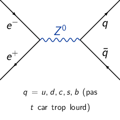
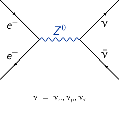

TD9 : Modèle Standard et au-delà : l'interaction faible
1 Masse et largeur du \(Z^0\) – Nombre de familles de neutrinos
Le LEP (pour Large Electron Positron collider) était un accélérateur de particules circulaire de 27 km de circonférence, passant sous le site du CERN entre la France et la Suisse. En fonction de 1989 à 2000, le LEP demeure le plus puissant collisionneur de leptons jamais construit (\(E_\text{max}=\unit[200]{GeV}\)).
La production de \(Z^0\) intervient par la collision de \(e^+e^-\). Ce boson se désintègre via différents canaux dont la désintégration \(Z^0\to e^+e^-\). La figure présente la section efficace en fonction de l'énergie des \(e^+e^-\) incidents.
- Les faisceaux d'électrons-positrons sont accélérés à la même énergie mais avec des impulsions opposées. Par conservation de l'impulsion, le \(Z^0\) ainsi produit est au repos et les deux leptons produits par désintégration sont donc émis dos-à-dos. La masse du \(Z^0\) correspond donc à la position en énergie du maximum de production i.e. à la résonance soit une masse de \(M_{Z^0}c^2=\unit[91.2]{GeV}\) (la mesure figurant dans le PDG donne 91.1876 ± 0.0021 GeV). La largeur à mi-hauteur mesurée est \(\Gamma(Z^0)=2\times(91.2-90)=\unit[2.4]{GeV}\) (contre 2.4952 ± 0.0023 GeV dans le PDG).
- \(\Gamma(Z^0)\gg\Gamma(Z^0\to e^+e^-)\). La durée de vie du boson \(Z^0\) est une propriété intrinsèque à cette particule : elle ne dépond donc pas du mode de désintégration. À titre d'exemple, la mesure du taux de désintégration de \(Z^0\to\mu^+\mu^-\) donnerait un résultat expérimental identique. À partir de la distribution en masse invariante, la largeur de la résonance est donc la convolution de l'ensemble des modes de désintégration du \(Z^0\) (à laquelle s'ajoute les effets expérimentaux tels que la résolution en énergie du calorimètre électromagnétique). On ne peut donc expérimentalement isolé les différents modes de désintégrations du \(Z^0\).
- Diagrammes de Feynman
 
 - Calcul du nombre de neutrinos
\begin{align*}
\Gamma_\text{tot.}(Z^0)=N_\nu\Gamma(Z^0\to\nu\bar{\nu})+N_\ell\Gamma(Z^0\to \ell^-\ell^+)+\Gamma_\text{tot.}(Z^0\to q\bar{q})=\unit[2495]{MeV}
\end{align*}
avec \(\Gamma_\text{tot.}(Z^0\to q\bar{q})=\unit[1741]{MeV}\), \(\Gamma(Z^0\to \ell^-\ell^+)=\Gamma(Z^0\to e^-e^+)=\unit[84]{MeV}\) et
\begin{align*} \Gamma(Z^0\to\nu\bar{\nu})=\frac{\alpha_\text{em}\,M_{Z^0}c^2}{24\sin^2\theta_W\cos^2\theta_W} \end{align*}Ainsi, le nombre de neutrinos \(N_\nu\) s'écrit
\begin{align*} N_\nu&=\frac{\Gamma_\text{tot.}(Z^0)-N_\ell\Gamma(Z^0\to \ell^-\ell^+)-\Gamma_\text{tot.}(Z^0\to q\bar{q})}{\Gamma(Z^0\to\nu\bar{\nu})}\\ &=\frac{\Gamma_\text{tot.}(Z^0)-N_\ell\Gamma(Z^0\to \ell^-\ell^+)-\Gamma_\text{tot.}(Z^0\to q\bar{q})}{\alpha_\text{em}\,M_{Z^0}c^2}\times24\sin^2\theta_W\cos^2\theta_W\\ &=\frac{2495-3\times84-1741}{91.2\,10^3}\times128\times24\times0.23\times(1-0.23)\\ &=2.99\text{ soit 3 familles de neutrinos} \end{align*}
2 Neutrinos : production, détection, masse
2.1 Chaîne \(pp\) : \(4p\to\alpha+2\nu\)
- Chaque réaction produit deux neutrinos et libère \(Q=\unit[26.72]{MeV}\). Le
nombre de neutrinos produit par le Soleil est
\begin{align*}
N_\nu&=2\times\frac{P_\odot}{Q}=2\times\frac{3.83\,10^{26}}{26.76\,10^6\times1.6\,10^{-19}}\\
&=\unit[1.78\,10^{38}]{s}^{-1}
\end{align*}
Le flux de neutrinos sur Terre est alors
\begin{align*} F_\nu&=\frac{N_\nu}{4\pi\,R^2}=\frac{1.78\,10^{38}}{4\pi\,(1.5\,10^{11})^2}\\ &=6.33\,10^{14}\,\text{m\(^{-2}\).s$^{-1}$} \end{align*} - 3% de l'énergie libérée par chaque réaction \(Q=\unit[26.72]{MeV}\) est emportée par les deux neutrinos d'où \begin{align*} \langle E_\nu\rangle=\frac{3\%\,Q}{2}=\unit[0.4]{MeV} \end{align*}
2.2 Limite sur la masse des neutrinos
- Le temps d'arrivée d'un neutrino correspond à \(t=\frac{D}{v}=\frac{D}{\beta
c}\). Or
\begin{align*}
\gamma&=\frac{E}{m_\nu c^2}=\frac{1}{\surd 1-\beta^2}\\
1-\beta^2&=\frac{(m_\nu c^2)^2}{E^2}\\
\beta&=\sqrt{1-\frac{(m_\nu c^2)^2}{E^2}}
\end{align*}
Le temps d'arrivé est ainsi
\begin{align*} t=\frac{D}{c\surd1-\frac{(m_\nu c^2)^2}{E^2}} \end{align*} - Les neutrinos les plus énergétiques arriveront les premiers soit \begin{align*} \Updelta t&=t_1-t_2\\ &=\frac{D}{c}\left(\frac{1}{\surd1-\frac{m_\nu^2c^4}{E_1^2}}-\frac{1}{\surd1-\frac{m_\nu^2c^4}{E_2^2}}\right)\\ &\text{or }m_\nu c^2\ll E_{1,2}\\ &\simeq\frac{D}{c}\left(\cancel{1}+\frac{1}{2}\times\frac{m_\nu^2c^4}{E_1^2}-\cancel{1}-\frac{1}{2}\times\frac{m_\nu^2c^4}{E_2^2}\right)\\ &\simeq\frac{D}{c}\times\frac{m_\nu^2 c^4}{2}\left(\frac{1}{E_1^2}-\frac{1}{E_2^2}\right) \end{align*}
- Du fait que \(\Updelta t\leq\unit[10]{s}\), on déduit que la masse des neutrinos \(m_\nu\)
est nécessairement inférieure à
\begin{align*}
\Updelta t\leq\unit[10]{s}\Longleftrightarrow&m_\nu c^2\leq\sqrt{\frac{\Updelta t\times2c}{D}\times\frac{1}{1/E_1^2-1/E_2^2}}\\
&m_\nu c^2\leq\sqrt{\frac{2\Updelta tc}{D}\times\frac{E_1^2E_2^2}{E_2^2-E_1^2}}\\
&m_\nu c^2\leq E_1E_2\sqrt{\frac{2\Updelta tc}{D}\frac{1}{E_2^2-E_1^2}}\\
&m_\nu c^2\leq 5\times20\sqrt{\frac{20\times\cancel{c}}{1.7\,10^5\times\cancel{c}\times3600\times24\times365}\times\frac{1}{20^2-5^2}}\\
&m_\nu c^2\leq 5\times20\sqrt{\frac{20}{1.7\times3.15}\times\frac{1}{400-25}}\times\unit[10^{-6}]{MeV}\\
&m_\nu c^2\leq\unit[10]{eV}
\end{align*}
Le résultat final fut \(m_{\nu_e}c^2\leq\unit[7]{eV}\) 1, valeur qui, grâce aux expériences de mesure directe de la masse du neutrino électronique via l'étude du end-point du spectre de désintégration β du tritium, Mainz et Troitztk, atteint aujourd'hui \(m_{\nu_e}\leq\unit[2.2]{eV}\). La future expérience Katrin devait gagner encore un ordre de grandeur sur la sensibilité : \(m_{\nu_e}\leq\unit[0.2]{eV}\).
1W. David Arnett & Jonathan L. Roser Physical Review Letter 58, David N. Spergel & John N. Bahcall Physical Letters B
3 Les mésons neutres \(K^0\) et \(\bar{K}^0\)
- Les états "fictifs" \(\ket{K^0_1}\) et \(\ket{K^0_2}\) sont des états propres de
\(\hat{\mathcal{C}}\hat{\mathcal{P}}\) de valeurs propres respectives +1 et
-1. Les états finaux hadroniques à 2 et 3 pions sont également états propres
de l'opérateur \(\hat{\mathcal{C}}\hat{\mathcal{P}}\) et ont des valeurs
propres identiques à celle des états \(\ket{K^0_1}\) et \(\ket{K^0_2}\). Les
états physique \(\ket{K^0}\) et \(\ket{\bar{K}^0}\) étant un mélange des états
propres \(\ket{K^0_1}\) et \(\ket{K^0_2}\) et se désintégrant aussi bien en deux
et trois pions, on déduit, par association des valeurs propres, que l'état
\(\ket{K^0_1}\equiv\ket{2\pi}\) et \(\ket{K^0_2}\equiv\ket{3\pi}\). La durée de
vie moyenne de ces deux états est ainsi
\begin{align*}
\tau_1&=\frac{1}{\lambda_{2\pi}}=\unit[8.9\,10^{-11}]{s}\\
\tau_2&=\frac{1}{\lambda_{3\pi}}=\unit[5.2\,10^{-8}]{s}
\end{align*}
On note que ces deux durées de vie sont compatibles avec celles issues de processus par intéraction faible.
- Soit un faisceau de particules de vitesse \(v=\beta c\), de vie moyenne \(\tau\)
et d'intensité \(I_0\)
- Dans le référentiel du faisceau i.e. du centre de masse, l'intensité est égale \(I=I_0\exp(-t^*/\tau)\). Dans le référentiel du laboratoire, cette intensité devient \(I=I_0\exp(-t/\gamma\tau)\). Par ailleurs, le temps nécessaire pour parcourir la distance \(L\) est \(t=\frac{L}{v}=\frac{L}{\beta c}\). On déduit que l'intensité du faisceau après avoir parcouru une distance \(L\) s'écrit \begin{align*} I=I_0\exp\left(-\frac{L}{\gamma\tau\beta c}\right)=I_0\exp\left(-\frac{L}{\ell}\right) \end{align*}
- Faisceau de \(K^0\) à \(p=\unit[10]{GeV/c}\). Initialement, le faisceau est
donc constitué pour moitié de "particules" \(K_1^0\), l'autre moitié étant
les "particules" \(K_2^0\). On suppose par ailleurs que la masse et
l'impulsion de ces particules sont identiques
(\(\beta_1=\beta_2=\beta_{K^0}\)).
- Après un parcours de longueur \(L=\unit[10]{m}\), l'intensité respective
de chaque composante, \(K^0_1\) et \(K^0_2\), du faisceau est
\begin{align*}
I_{1,2}&=I_{01,02}\exp\left(-\frac{L}{\gamma\tau_{1,2}\beta c}\right)\\
&\text{avec }I_{01}=I_{02}=\frac{I_0}{2}\\
\text{d'où }\rho=\frac{I_1}{I_2}&=\exp\left[-\frac{L}{\gamma\beta c}\left(\frac{1}{\tau_1}-\frac{1}{\tau_2}\right)\right]\\
\rho&=\exp\left[-\frac{L}{\gamma\beta c}\frac{\tau_2-\tau_1}{\tau_1\tau_2}\right]\\
&\simeq\exp\left[-\frac{L}{\gamma\beta c}\frac{1}{\tau_1}\right]
\end{align*}
Par ailleurs,
\begin{align*} p_K^2c^2&=E^2-m_K^2c^4=(\gamma-1)m_K^2c^4\\ &\text{or }\gamma=\frac{1}{\surd 1-\beta^2}\to(\gamma\beta)^2=\gamma^2-1\\ \gamma\beta&=\frac{p_Kc}{m_Kc^2}=\frac{10}{0.4977}=20.1 \end{align*}Le rapport ρ entre les intensités de chacun des états \(\ket{K^0_1}\) et \(\ket{K^0_2}\) est égal à
\begin{align*} \rho=\frac{I_1}{I_2}=7.37\,10^{-9}\ll1 \end{align*} - Ainsi, au bout de 10 mètres et en raison de la désintégration des \(K^0_1\) et des \(K^0_2\), il ne reste dans le faisceau que des particules \(K^0_2\). Or, ces dernières sont le fruit d'un mélange des états \(K^0\) et \(\bar{K}^0\) à savoir \(\ket{K^0_2}=\frac{1}{\surd2}\left(\ket{K^0}+\ket{\bar{K}^0}\right)\). Le faisceau est ainsi constitué à part égale de mésons \(K^0\) et de mésons \(\bar{K}^0\) : les mésons \(K^0\) se sont donc "transformés" en leur antiparticule \(\bar{K}^0\). Cette transformation est le phénomène d'oscillation \(K^0\leftrightarrow\bar{K}^0\).
- Après un parcours de longueur \(L=\unit[10]{m}\), l'intensité respective
de chaque composante, \(K^0_1\) et \(K^0_2\), du faisceau est
\begin{align*}
I_{1,2}&=I_{01,02}\exp\left(-\frac{L}{\gamma\tau_{1,2}\beta c}\right)\\
&\text{avec }I_{01}=I_{02}=\frac{I_0}{2}\\
\text{d'où }\rho=\frac{I_1}{I_2}&=\exp\left[-\frac{L}{\gamma\beta c}\left(\frac{1}{\tau_1}-\frac{1}{\tau_2}\right)\right]\\
\rho&=\exp\left[-\frac{L}{\gamma\beta c}\frac{\tau_2-\tau_1}{\tau_1\tau_2}\right]\\
&\simeq\exp\left[-\frac{L}{\gamma\beta c}\frac{1}{\tau_1}\right]
\end{align*}